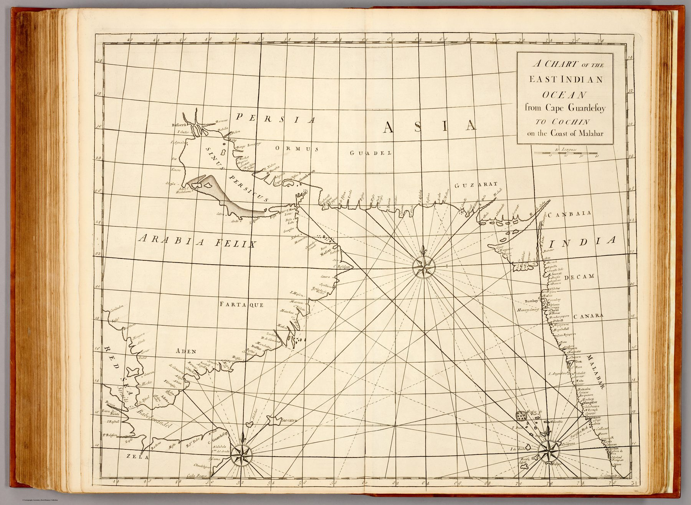

The object
From the Atlas Maritimus & Commercialis (London, 1728), the consortium sea-atlas conventionally associated with Nathaniel Cutler and Edmond Halley but largely the work of John Senex and John Harris. The chart covers the Arabian Sea between the Horn of Africa and the south-west Indian coast – rhumb lines, soundings, shoals and graticule – at about 1:6,000,000.
The Arabian Sea as fairway
Its frame is the navigator’s: precisely the stretch of ocean and coast a ship crossed to reach the Malabar pepper ports. Cape Guardafui to Cochin is a sailing problem made visible – the monsoon-driven passage that had carried trade between Arabia and India since antiquity, here rendered as a modern commercial chart.
The gaze
Cochin is the only Indian place this chart needs. Everything else on the sheet – Guardafui, the soundings, the rhumbs across the Arabian Sea – exists to bring a merchant captain to that one pepper port, and the atlas promised its general reader exactly this kind of usable route. India here is a landfall.
In the Deccan timeline